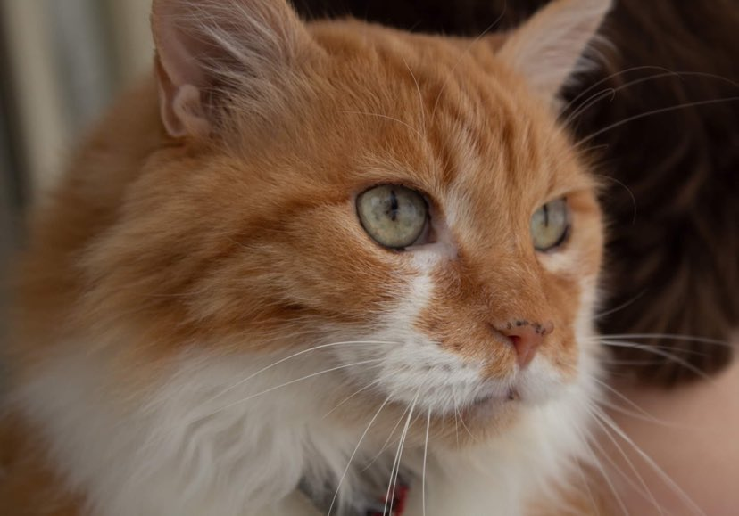

Rajah is a very sweet cat, who loves anyone who will pet him. He is very well-behaved, and very food-motivated. Rajah is a gentle boy, and rarely, if ever, bites people. He doesn't play very much, but enjoys lounging on our porch in the sun.
- Breed of Cat
- He is a mix of multiple breeds, but due to how floppy he is when picked up, I suspect he is part ragdoll!
- Appearance of Cat
- He is a large orange and white cat, with long and fluffy fur.
- My Cat's Favourite Things (or his hobbies):
-
Food, treats, petting, and going outside.